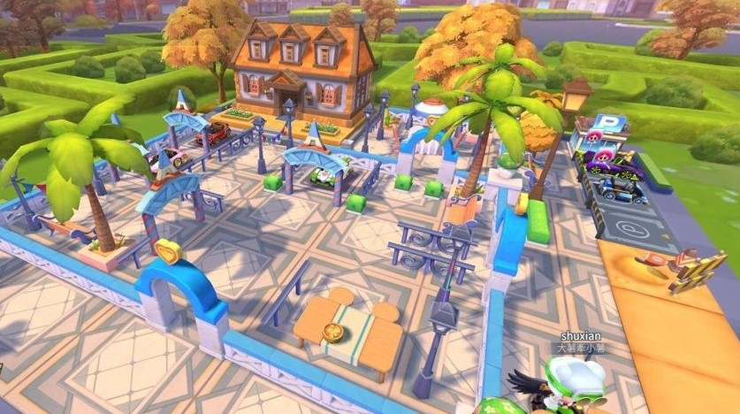
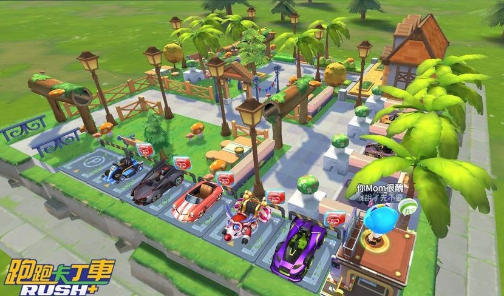
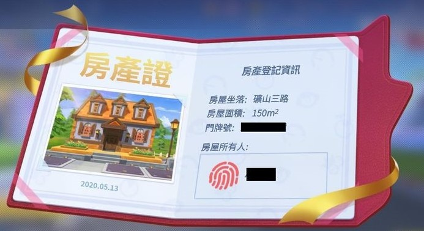
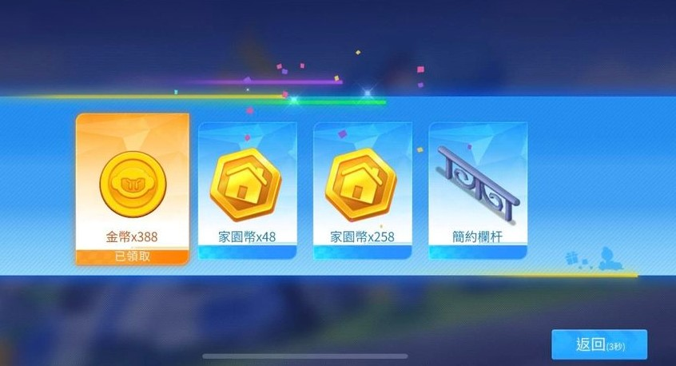
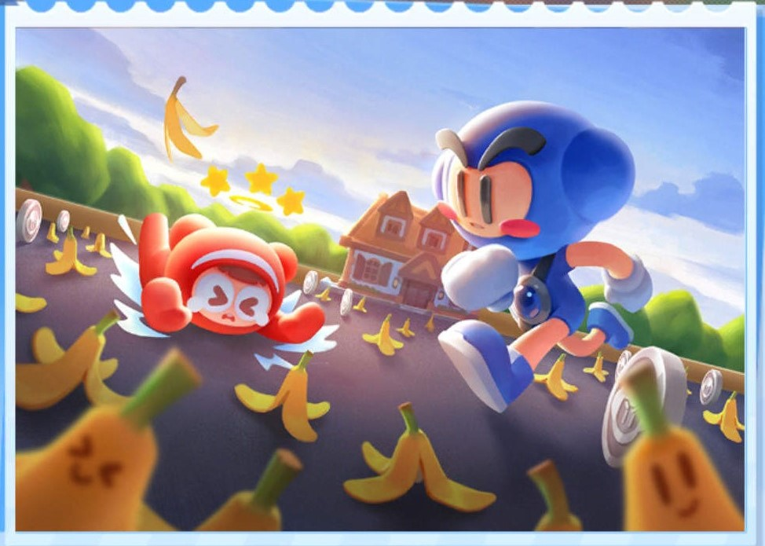
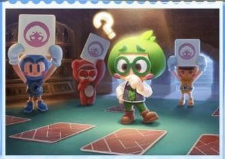
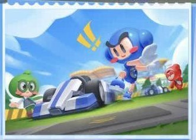
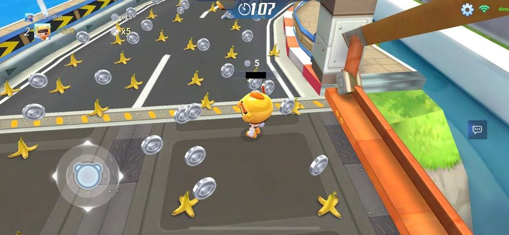
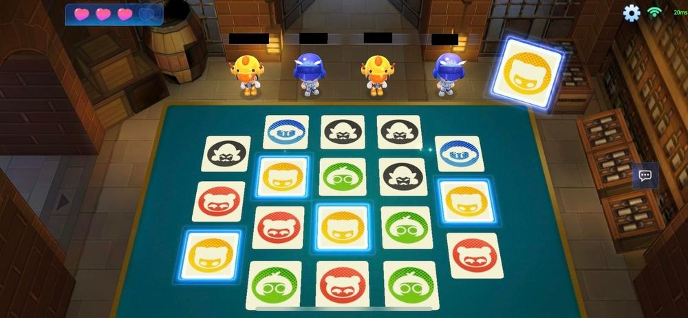
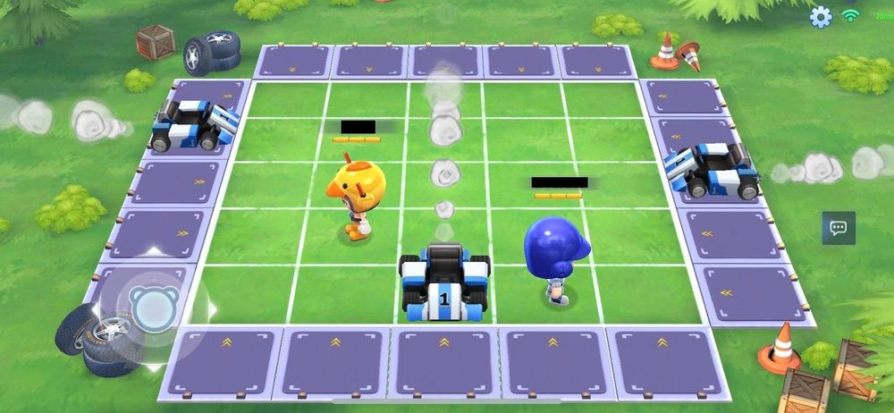

小屋系統
當角色升到等級六的時候小屋系統會開放。

每個小屋都有獨立式立體停車場

可以隨建築物裝飾自行擴充
房產證

有了房產證之後，可以用酷幣和家園幣購買小屋裝飾，打造屬於自己的小屋。
酷幣等同於遊戲裡的交易籌碼，可以靠解小屋的每日任務來獲得，又或者是用儲值的方式來兌換。
家園幣主要作用則是兌換各種小屋裝扮，使用裝扮可以提高家園的繁榮度， 獲得更高的好友排名和獎勵，可以去遊樂場賺取家園幣。
遊樂場
遊樂場模式，每日前 10 局得到勝利候可以隨機選牌抽取獎勵。

獎勵有小屋裝飾、家園幣或幸運幣。
爆走蕉皮
歡樂翻牌
瘋狂躲車
爆走蕉皮

躲避地上的香蕉皮，不能踩到香蕉皮去阻礙到吃銀幣， 如果不小心踩到焦皮就會頭暈把銀幣吐出來，途中會有香蕉掉落作為干擾。 比時間內誰吃的銀幣比較多，多者獲勝。
歡樂翻牌

遊戲開始前會有幾張牌讓大家記住，需要記憶的牌數與人數一樣。 在另一邊則會有一堆牌混合著需要記憶的牌，給玩家幾秒鐘的記憶秒數。 時間到後牌面全部翻下，由系統任意移動紙牌位置，移動結束后， 讓玩家選擇剛剛記憶的紙牌在什麼位置。正確則為勝利，共有四次機會。
瘋狂躲車

不同數量的賽車從上下左右四個方向將隨機開，玩家需要躲避不規則的車輛， 每個玩家各有三點生命值，被賽車撞到一次扣一點生命值，生命值扣完後玩家將被淘汰， 回合數越高車輛越多速度也越快，過越多關卡的玩家有機會獲得的更高的遊戲獎勵。